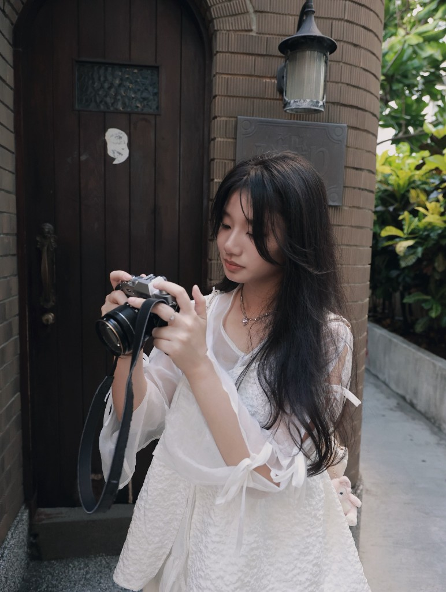

劉宜芳
我目前在一間 stealth startup 擔任 UX Intern，也是台北城市科技大學流行音樂事業系大一學生。過去從音樂學習出發，後來透過拍照與剪輯接觸影像創作，也參與過校內外演出、MV 製作與音樂祭攝影。現在的我正在持續累積作品與實作經驗，慢慢建立自己的影像風格。

求學經歷
- 中華藝術學校音樂科。
- 台北城市科技大學流行音樂事業系（大一）。
興趣專長
- 興趣：鋼琴、音樂創作、攝影、旅遊、影音剪輯。
- 專長：攝影與影音後製剪輯。
經驗
- 中華藝校春秋展 民族打擊與管弦樂團。
- 2023 高雄管樂節 台灣青年長笛樂團。
- 崑山科大 MV 拍攝與錄音合作。
- 崛起音樂祭攝影組。